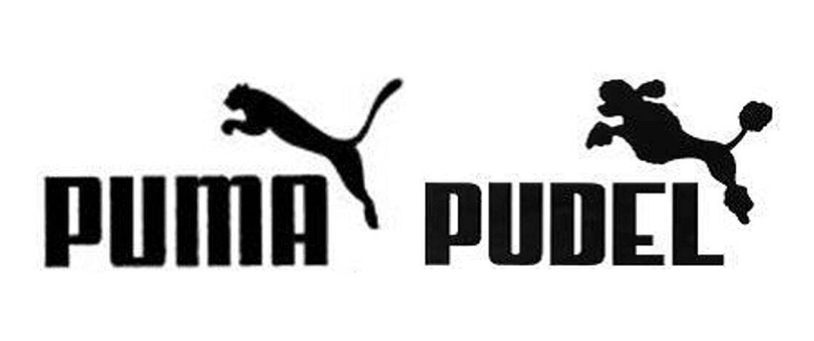
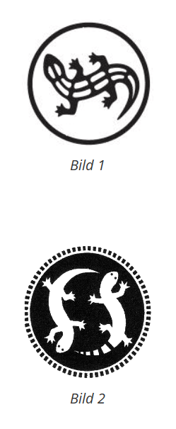
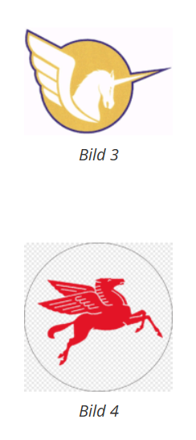

Die Verwechslungsgefahr zwischen Marken hängt davon ab, ob es eine Wahrscheinlichkeit gibt, dass Verbraucher fälschlicherweise annehmen, dass zwei Marken von demselben Unternehmen stammen. Dies kann auftreten, wenn die Marken für ähnliche oder gleiche Waren und Dienstleistungen eingetragen sind und wenn die Marken selbst ähnlich sind. Der erste Schritt bei der Prüfung der Verwechslungsgefahr ist der Vergleich der Waren und Dienstleistungen, für die die Marken eingetragen sind. Wenn diese Waren und Dienstleistungen gleichartig sind oder wenn Verbraucher davon ausgehen könnten, dass sie von verbundenen Unternehmen stammen, erhöht sich die Wahrscheinlichkeit einer Verwechslungsgefahr. Es ist wichtig zu beachten, dass die Ähnlichkeit der Marken selbst auch ein wichtiger Faktor ist. Selbst wenn die Waren und Dienstleistungen ähnlich sind, kann eine geringe Ähnlichkeit der Marken die Verwechslungsgefahr mindern. Die endgültige Entscheidung über die Verwechslungsgefahr erfordert eine Gesamtwertung mehrerer Kriterien und oft die Einschätzung durch einen juristischen Experten.
Beim Vergleich von Zeichen, insbesondere von Wortmarken, ist der Gesamteindruck massgebend, den sie beim Verbraucher hinterlassen. Da ein Käufer normalerweise nicht beide Zeichen gleichzeitig vor sich hat, sondern sich an ein mehr oder weniger bestimmtes Erinnerungsbild erinnert, sind charakteristische Elemente entscheidend. Beschreibende Elemente, die auf die Ware selbst oder deren Eigenschaften hinweisen, werden beim Vergleich von Marken nur begrenzt berücksichtigt. Die Ähnlichkeit von Wortmarken wird auf drei Ebenen bewertet:
| Klang: | Wird das Wort ähnlich ausgesprochen? Dies hängt von Faktoren wie der Anzahl der Silben, der Betonung und der Vokalfolge ab. Auch eine identische Konsonantenfolge oder ein gleicher Wortanfang können zu Zeichenähnlichkeit führen. |
|---|---|
| Schriftbild: | Sehen die Wörter ähnlich aus? Das Schriftbild wird durch die Wortlänge und die Ähnlichkeit oder Verschiedenheit der verwendeten Buchstaben geprägt. |
| Bedeutung: | Bedeuten die Wörter dasselbe oder etwas Ähnliches? Dies begründet grundsätzlich eine Ähnlichkeit, aber die Bedeutung muss spontan erkennbar und verständlich sein. Inhaltliche Übereinstimmungen oder Unterschiede in Bezug auf sachliche und beschreibende Hinweise sind nicht entscheidend, da beschreibende Elemente für die Kennzeichnung kaum Bedeutung haben. |
| Markenrechts Verletzung |
|---|
|  |
| Verwechselbar | Nicht Verwechselbar |
|---|---|
|  |  |